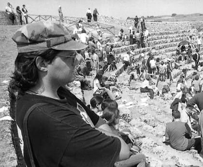
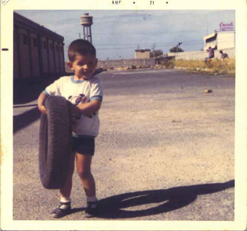
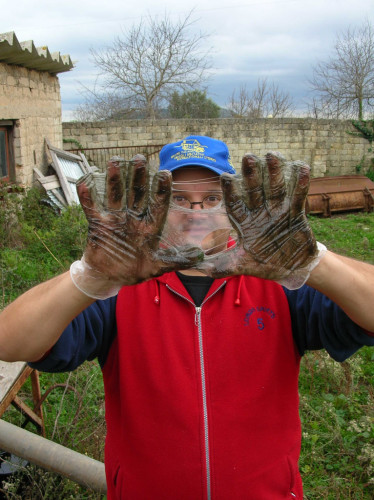
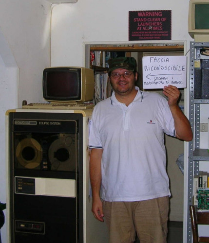

Successe un paio di giorni fa che l’amico Smilzo mi invito’ su badoo, ennesima cazzo di community online dove fighetti e rimbecillite di tutto il mondo cercano d’inchiavardarsi l’un l’altro, in una apoteosi lesbo-teen di orrore in stile internet punk-islam tutta loghi e sonerie, tanto amata dai ragazzetti d’oggi…
Ok mi dico io, registriamoci st’account prima che arrivi un FINOCCHIO CANADESE di 83 anni a registrarsi asbesto.badoo.com al posto mio, inserendo COSE ORRENDE …
e mi registro
e metto dentro queste foto:

che decido di usare come mia foto di presentazione, perche’ e’ la migliore che ho, ed aggiungo anche:
… che e’ scuretta ma mi si vede comunque in viso, e poi

… che rappresenta la mia continuita’ col passato, poiche’ sono io piccino che gioco, con sullo sfondo la Eternit Siciliana, fabbrica di manufatti in cemento-AMIANTO … :)
Ok, salvo tutto, ciao ciao
STAMATTINA MI SCRIVONO:
Spostate dall’album “Ecco come sono…”
In queste foto il tuo viso non è visibile o oscurato, o le foto sono considerate erotiche. Queste foto possono essere messe in qualsiasi altro album, tranne che in “Ecco come sono…”.
Riguardo le foto e penso: ma questi sono DEFICIENTI?
CHE PALLE. Cerco un’altra foto dove secondo loro io sia riconoscibile, e la uppo. eccola qua:

dove se non sono riconoscibile qui, porco dio!
… ed infatti, pochi MINUTI DOPO (si, pochi MINUTI DOPO: evidentemente c’e’ qualcuno dall’altra parte dell’INTERNET che e’ li’ per ROMPERMI IL CAZZO) …
In queste foto il tuo viso non è visibile o oscurato, o le foto sono considerate erotiche. Queste foto possono essere messe in qualsiasi altro album, tranne che in "Ecco come sono…".
Posso capire. Le mani non mostrano le mie evidentemente enormi ORECCHIE.
decido allora di farmi una foto dove io sia ben riconoscibile, in viso
la faccio, e la metto su. eccola qua:

… qui ANCORA RIDEVO, PERCHE’ PENSAVO DI FARE QUESTO SIMPATICO SCHERZETTO DEL CARTELLO, dato che ora la mia faccia e’ ben riconoscibile, sono visibilissimo, a figura intera.
MA NIENTE DA FARE.
lo scassacazzi di BADOO, che se legge queste lamentazioni e’ pregato di contattarmi :), insiste con l’incredibile, CON L’INCREDIBILE:
In queste foto il tuo viso non è visibile o oscurato, o le foto sono considerate erotiche. Queste foto possono essere messe in qualsiasi altro album, tranne che in "Ecco come sono…".
Ora, a me non sembra di avere evidenti EREZIONI sotto i pantaloncini, ne’ di avere, che so, dei CAZZI IN BOCCA. Inoltre, il mio viso e’ PERFETTAMENTE RICONOSCIBILE. O devo togliermi il cappello?
Se prima ero sorridente e scherzavo, ora MI SONO VERAMENTE ROTTO IL CAZZO
FACCIO LA FOTO DEFINITIVA, E LA METTO SU:
La foto E’ ANCORA LI’, EVIDENTEMENTE ADESSO SONO PERFETTAMENTE RICONOSCIBILE.
Se volete guardare le pagine, stanno su http://asbesto.badoo.com …
so gia’ che rimuoveranno prima o poi anche questa cazzo di foto, perche’ secondo il loro regolamento contiene “linguaggio offensivo” … vedremo!